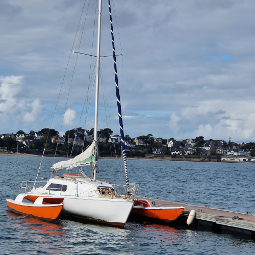

Tri Yann
Trimaran Allegro, basé à Saint‑Philibert
Le Bateau
Trimaran Allegro
Tri Yann, l'Allegro en cours de refit. Sera inscrit au boat club.
Bateau dessiné par André Allègre, architecte de Pend Duick 4 construit à Sète.
Allegro fait évidemment penser à un tempo rapide, joyeux, vif et guilleret... C'est aussi un clin d'œil à son concepteur André Allègre, récemment décédé.
Ce colosse, véritable défricheur du multicoque, fut tout de même l'architecte de Pen Duick IV, rebaptisé Manureva. Un grand monsieur !
Certes, l'ambitieux trimaran en aluminium a disparu avec son skipper Alain Colas lors de la première Route du Rhum en 1978...
Mais auparavant, il a bouclé un tour du monde en solitaire par le Cap Horn et remporté l'OSTAR en 1972. L'Allegro, lancé en 1976, est lui
aussi particulièrement innovant : alors que les œuvres vives adoptent des carènes en U très fines à la flottaison, la coque centrale adopte un incroyable redan,
encore élargi au pont par les carénages qui coiffent les bras de liaison. Sous l'eau, la finesse d'un multicoque, à l'intérieur et sur le pont,
le volume et la surface d'un monocoque. Certes, les trimarans modernes adoptent aussi cette recette. Mais toujours pas aussi radicalement que l'a imaginé André Allègre.
Site dédié :
https://trimaranallegro.lescigales.org/
- Longueur de signalement 8,35 m (mais une petite jupe a été ajoutée par le précédent propriétaire).
- Plus grande largeur extérieure 4,80 m.
- Jauge brute 6,21 tonneaux (ce voilier est exempté de la taxe annuelle de francisation compte-tenu de son ancienneté).
-
Homologué insubmersible (procès verbal numéro 149-41/149-42) il était donc donc dispensé de la survie dans l'ancienne réglementation quatrième
catégorie contrairement à ce qu'affirme la revue Bateaux dans son test de 1979 antérieur à l'homologation. Ce voilier pouvait être armé en troisième catégorie.
- Volumes de mousse dans la coque avant et arrière ainsi que dans les flotteurs.
-
Les bras de liaison sont solidaires des flotteurs et se boulonnent sur la coque centrale par 8 boulons de diamètre 18 sur une contreplaque acier ;
l'Allegro est donc transportable ! C'est ce que faisait le propriétaire de Zorglub avec une 604. Alphonse Rigaud démontait le mât avec une
chèvre (lire son témoignage plus loin) mais c'est loin d'être une partie de plaisir, même avec une bonne équipe - et je n'ai jamais tenté l'aventure !
Le poids donné par le constructeur est de 1,3 tonne...
Le bateau s'appelle Tri Yann parce que son donateur s'appelle Yann et qu'il est musicien (les copains du bord) et copain du groupe éponyme.
Il sera basé à Saint‑Philibert pour le boat club et géré par l'école de volle Océane.
Plus d'infos...
Référent : école de voile Océane.
Email : smenuet@evoceane.fr